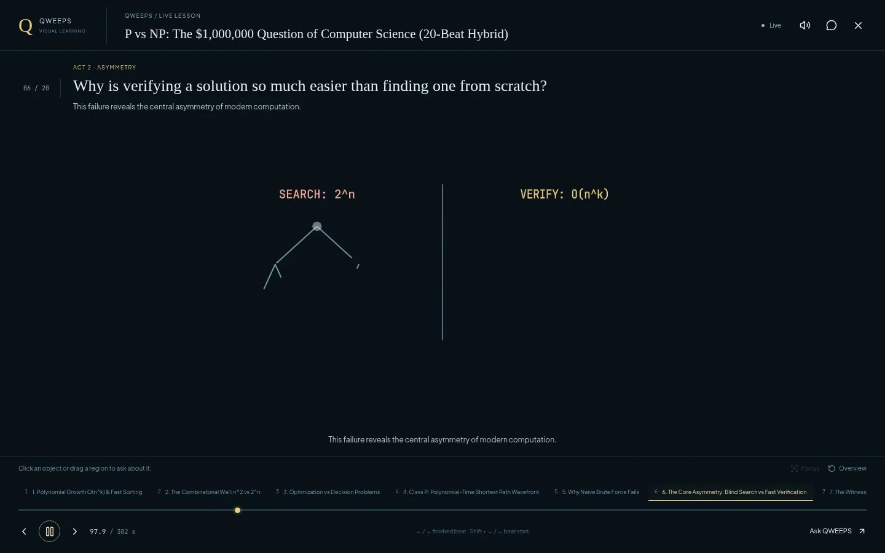
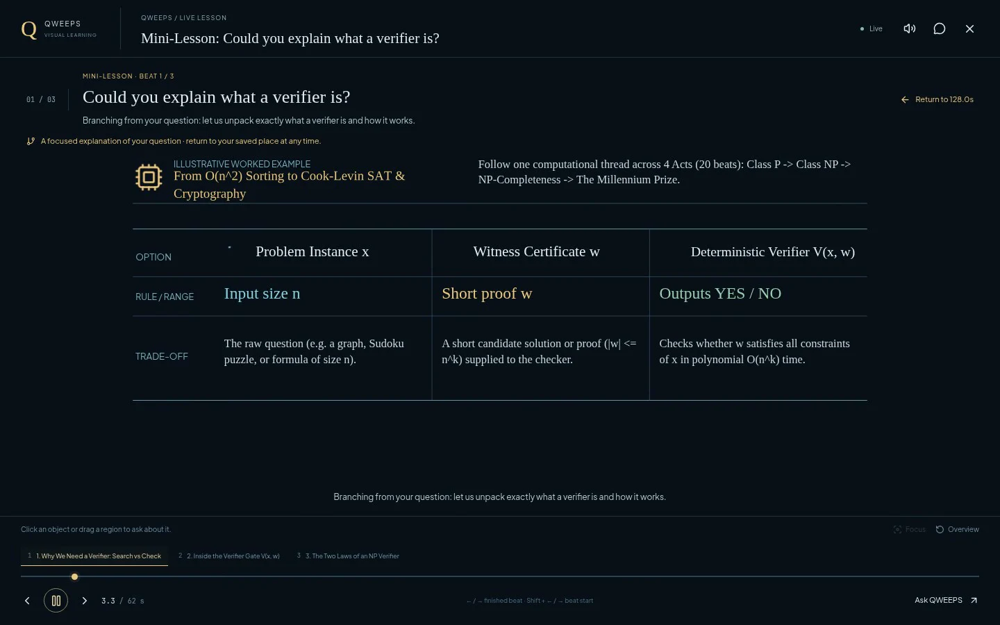
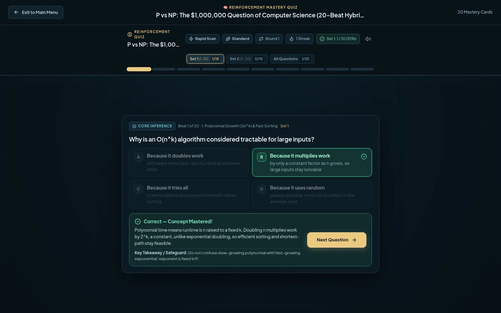

01
Plan beats
Turn a topic or document into connected reasoning beats. Each beat has a job in the argument.
Quest 01 / Complete / Case study
Live interactive visual teaching. A research prototype that turns a question or a source document into an inspectable visual lesson — not a slide deck, not a pre-rendered video, but a navigable explanation with synchronized narration.
01 / The brief
Most generated lessons are static slides or pre-rendered video. They are slow to produce, hard to inspect, and impossible to branch. If a learner gets stuck on one idea, the lesson cannot open a door beside it.
QWEEPS asks a different question: what if the lesson itself were a live interface — one that can pause, explain an object, answer a question, and return the learner to exactly where they were?
The approach
The system plans connected reasoning beats, chooses a presentation method for each beat, generates scene data, reviews actual browser-rendered frames, and plays the lesson live in the browser with synchronized speech.
02 / The build
Four moves, repeated for every lesson. The point is not to generate more content; it is to make the content inspectable.
01
Turn a topic or document into connected reasoning beats. Each beat has a job in the argument.
02
Choose a presentation method per beat. Build SVG layouts, diagrams, and native math animation.
03
Check actual rendered frames and layout contracts. Content review is not enough if the frame is broken.
04
Stream the lesson with synchronized narration. Pause, inspect, ask, branch, return.
03 / The system
The interface is the visible part. Under it, a pipeline ties planning, rendering, review, and playback to the same timeline.
It is keeping the visuals, speech, and interaction on the same clock — and then proving that the rendered frame actually matches the plan. QWEEPS treats frame review as part of the build, not a final polish pass.
The player chrome is deliberately quiet: a timeline, captions, inspect controls, and a place to ask. The lesson should feel like a space to explore, not a dashboard to manage.
04 / The interface
The lesson, the branch, and the quiz. Each screen is a different relationship between the learner and the same timeline.



05 / The result
Not a promise. A set of bundled lessons, a quiz, a technical report, and a public repository that can be inspected.
20
beats in the P vs NP hybrid lesson382s
of live, seekable lesson time03
bundled offline-playable lessons20
mastery quiz cards with recall loopsSCOPE NOTE: QWEEPS IS A SOFTWARE AND DESIGN PROTOTYPE, NOT A CONTROLLED LEARNING-OUTCOME STUDY. AUTOMATED REVIEW CAN MISS FACTUAL, VISUAL, OR TEACHING ERRORS. THE REPOSITORY AND REPORT DOCUMENT WHAT WAS ACTUALLY BUILT.
06 / Reflection
“I build interactive systems at the intersection of AI, real-time graphics, and audio-visual synchronization.” RAYVEN PAHIGNALO / PROJECT NOTES
The hard part is not making a demo that looks alive. It is making the aliveness legible: one clock, one timeline, one inspectable frame at a time. A generative interface earns trust when the user can stop it, ask a question, and see where the answer came from.
That is also the argument for this portfolio. Show the work, show the process, and leave the empty slots visible. The interface should not pretend to be more finished than the group is.